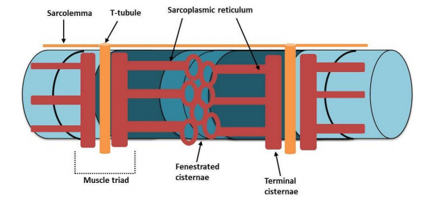

Read the text and answer the following activity. If there is a word you don't understand, you can look it up here.
|
Thanks to the bond of the thin filaments of adjacent sarcomeres at the level of the Z line, the simultaneous contraction of individual sarcomeres results in the contraction of the entire muscle fiber. The well-defined arrangement of the myofilaments is supported by the presence of several cytoskeletal proteins such as titin and nebulin that contribute to the stability and integrity of the sarcomere. The contraction of the myofibrils is possible by the presence of sarcolemmal and sarcoplasmic structures that allow the excitation-contraction coupling. In fact, the mechanism of contraction is triggered by Ca++ ions that bind to troponin, and in particular to C sub-unit, allowing the The sarcoplasmic reticulum is divided into fenestrated cisternae and terminal cisternae. The release of Ca++ ions from the terminal cisternae is allowed by sarcolemmal structures, namely the transverse tubule (T-tubule). The T-tubules are associated with the terminal cisternae, so that the action potential from the nerve fiber associated, can be transmitted to the terminal cisternae, which, thus, release the Ca++ ions. The association between one T-tubule and two terminal cisternae constitute the so-called muscles triad. 
Lastly, the mitochondria allow concretely the sliding of thin myofilaments on thick ones and, therefore, the contraction of the sarcomeres. Indeed, the mitochondria form a three-dimensional network throughout the cell, generating the required chemical energy (ATP), subsequently transformed into mechanical energy by the ATPase activity of myosin. |